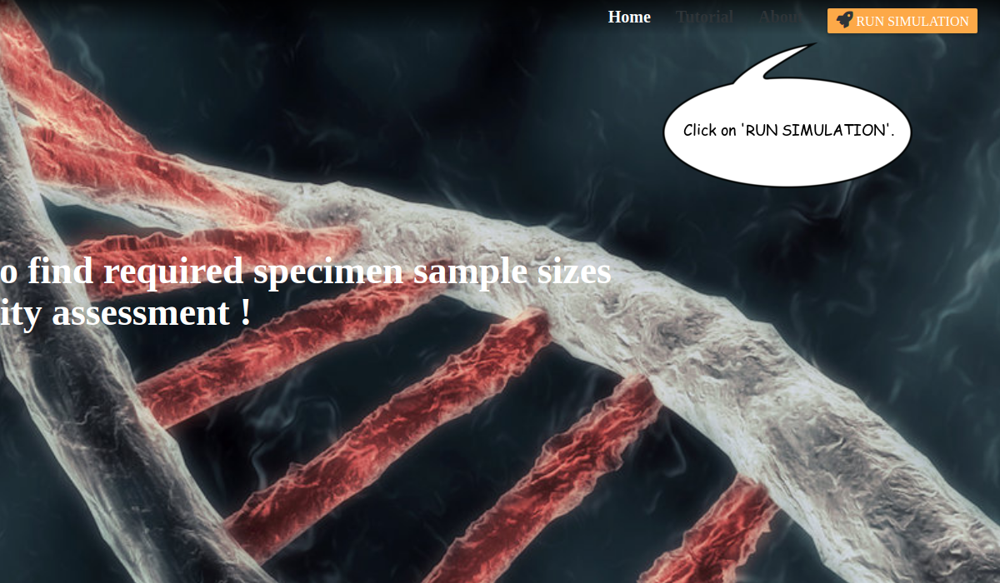
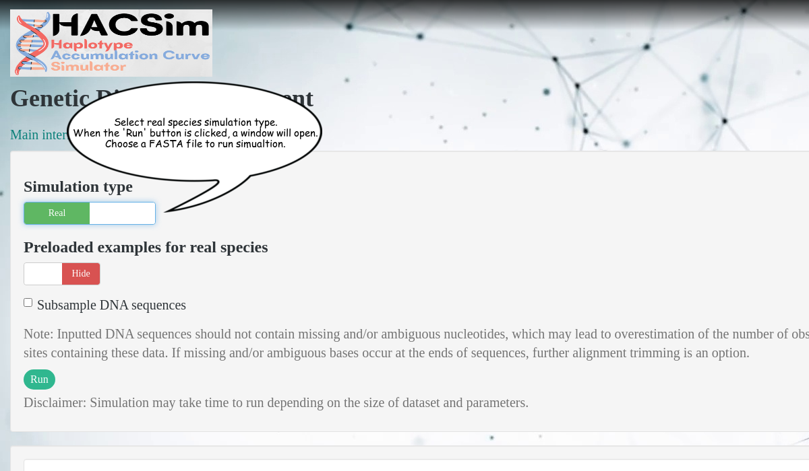
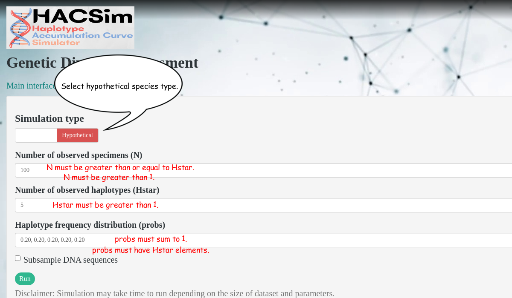

Click on the 'RUN SIMULATION' button located at the top-right corner of the home page to start HACSim.
Enter all the required arguments in the main interface and sub interface.
First, click on the main interface and fill in the desired number of permutations, proportion of haplotypes to recover, as well as the desired confidence level for calculations and plotting. By default, all iterations are run. However, users can choose to run the first iteration only. This is useful when simulations take a long time to finish, or when a user is interested only in assessing genetic diversity present in the current dataset. Next, go to the sub interface and toggle either real or hypothetical species simulation type.To simulate real species, follow the instructions in the picture below.
Users can either upload an aligned and trimmed FASTA file, or choose from several preloaded taxon datasets via a drop-down menu. To simulate hypothetical species, fill in the required input arguments depicted in the picture below.
For both hypothetical and real species simulations, users have the option to input either the proportion of haplotype labels or DNA sequences to subsample. To do so, click the appropriate checkbox and enter the desired value in the input field.
Once all steps have been completed, click 'Run'. If simulating real species, a pop-up window will appear again, prompting reselection of the desired FASTA file.
Depending on the size of input parameters to the simulation, the algorithm in its current form, can be quite slow to reach full convergence. For a species with equal haplotype frequency, saturation of the haplotype accumulation curve is (usually) reached very rapidly (one exception occurs when N = Hstar). On the other hand, for a species with many rare haplotypes, the generated haplotype accumulation curve will take signficantly longer to reach an asymptote since rare haplotypes will not be sampled as frequently as dominant ones.
Altered input parameters can be set back to their default values by clicking the 'Reset' button found in the main interface. In addition, the 'Refresh' button within the Sub interface can be used to clear the Results Panel between simulations.